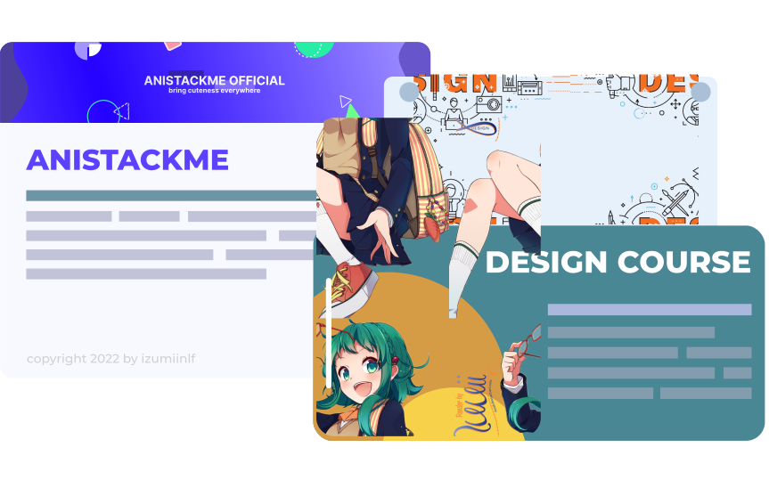

anistackme.xyz
Tentang Anistackme
Website Anistackme adalah tempat dimana kalian bisa explorasi lebih jauh dan lebih mengenal lagi fanpage kami! Grup official yang Selalu memberikan wallpaper dengan kualitas terbaik yang tentunya dengan sumber-sumber terpercaya sehingga tidak perlu takut ketinggalan info menarik dari sang illustrator terkait.
Fanpage Anistackme
Tentang Fanpage Anistackme
Anistackme sendiri dibentuk pada tahun 2020 pertama kali sebagai fanpage wallpaper anime dengan harapan bisa memberikan senyuman kepada penikmat / pencari wallpaper anime di luar sana. Kemudian Anistackme merubah branding dan konten dari "Penyedia Wallpaper Anime" menjadi "Desainer Grafis" dan melakukan Merger ke dalam Animepict9 sebagai 1 komunitas. "Bring Cuteness Everywhere Anytime" dibuat sebagai penambah, sekaligus menjadi original deskripsi judul milik Anistackme
Tujuan Fanpage Dibuat
Tujuan Awal Anistackme dibentuk adalah untuk memberikan wallpaper anime kepada pengikut, namun dikarenakan telah Merger bersama dengan Animepict9, Anistackme disini sekarang menjadi sebuah penyedia layanan Desain dan juga tempat Promosi Branding, dan agar bisa menjadi 1 Komunitas besar yang berisikan konten yang berkaitan dengan Anime.
Konten Kami
Saat Ini kami hanya menawarkan promosi kelas Web dan juga pembuatan Desain Grafis kepada orang-orang yang mengikuti fanpage.


Fanpage Animepict9
Tentang Fanpage Animepict9
Animepict9 awalnya merupakan fanpage wallpaper anime solo admin, dimana memberikan konten wallpaper anime dengan kualitas terbaik sebagai branding nya, yang kemudian disatukan kedalam komunitas Anistackme dan menjadi Fanpage Wallpaper Anime yang cukup diminati banyak follower

Tujuan Fanpage Dibuat
Dibentuk untuk memberikan dan menjadi database wallpaper anime untuk banyak orang yang menikmati. Memberikan wallpaper anime dengan kualitas tertinggi merupakan tujuan utama Fanpage Animepict9. Setelah bergabung dengan Anistackme, fanpage kami kemudian menawarkan "Custom Anime Wallpaper" dan juga "Request Anime Wallpaper" untuk lebih mengenal dekat selera para pengikut kami, sehingga bisa terus selalu memberikan yang terbaik kepada penikmat Wallpaper.
Pertanyaan & Permasalahan
Pembatasan Admin
Jika sebuah link, page, konten, apapun itu terkena Pembatasan Admin itu dikarenakan adanya masalah internal yang terjadi pada link, page, konten, apapun itu didalam nya, sehingga tidak sembarangan orang dapat mengakses link, page, konten tersebut secara bebas, maupun paksa! Terkait masalah Pembatasan bisa langsung hubungi Admin yang terkait!
Hubungi Admin Izumii terkait masalah Pembatasan Admin melalui direct message instagram